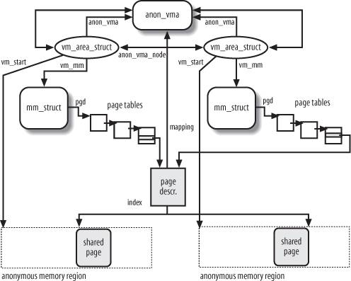
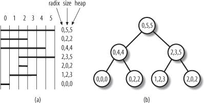

{% include JB/setup %}
{% raw %}
<div>


<a name="understandlk-CHP-17-SECT-2"></a>
<h3 class="docSection1Title">17.2. Reverse Mapping</h3><a name="IDX-CHP-17-4103"></a>
<a name="IDX-CHP-17-4104"></a>
<a name="IDX-CHP-17-4105"></a>
<a name="IDX-CHP-17-4106"></a>
<a name="IDX-CHP-17-4107"></a>
<a name="IDX-CHP-17-4108"></a>
<p class="docText1">As stated in the previous section, one of the objectives of the PFRA is to be able to free a shared page frame. To that end, the Linux 2.6 kernel is able to locate quickly all the Page Table entries that point to the same page frame. This activity is called <span class="docEmphasis">reverse mapping</span><a name="IDX-CHP-17-4109"></a> 
.</p>
<p class="docText1">A trivial solution for reverse mapping would be to include in each page descriptor additional fields to link together all the Page Table entries that point to the page frame associated with the page descriptor. However, keeping such lists up-to-date would increase significantly the kernel overhead; for that reason, more sophisticated solutions have been devised. The technique used in Linux 2.6 is named <span class="docEmphasis">object-based<a name="IDX-CHP-17-4110"></a> 
 reverse mapping</span>. Essentially, for any reclaimable User Mode page, the kernel stores the backward links to all memory regions in the system (the "objects") that include the page itself. Each memory region descriptor stores a pointer to a memory descriptor, which in turn includes a pointer to a Page Global Directory. Therefore, the backward links enable the PFRA to retrieve all Page Table entries referencing a given a page. Because there are fewer memory region descriptors than page descriptors, updating the backward links of a shared page is less time consuming. Let's see how this scheme is worked out.</p>
<p class="docText1">First of all, the PFRA must have a way to determine whether the page to be reclaimed is shared or non-shared, and whether it is mapped or anonymous. In order to do this, the kernel looks at two fields of the page descriptor: <tt class="calibre25">_mapcount</tt> and <tt class="calibre25">mapping</tt>.</p>
<p class="docText1">The <tt class="calibre25">_mapcount</tt> field stores the number of Page Table entries that refer to the page frame. The counter starts from <tt class="calibre25">-</tt>1: this value means that no Page Table entry references the page frame. Thus, if the counter is zero, the page is non-shared, while if it is greater than zero the page is shared. The <tt class="calibre25">page_mapcount( )</tt> function receives the address of a page descriptor and returns the value of its <tt class="calibre25">_mapcount</tt> plus one (thus, for instance, it returns one for a non-shared page included in the User Mode address space of some process).</p>
<p class="docText1">The <tt class="calibre25">mapping</tt> field of the page descriptor determines whether the page is mapped or anonymous, as follows:</p>
<ul class="calibre11"><li class="calibre12"><p class="docText1">If the <tt class="calibre25">mapping</tt> field is <tt class="calibre25">NULL</tt>, the page belongs to the swap cache (see the section "<a class="pcalibre5 docLink pcalibre1" href="understandlk-CHP-17-SECT-4.html#understandlk-CHP-17-SECT-4.6">The Swap Cache</a>" later in this chapter).</p></li><li class="calibre12"><p class="docText1">If the mapping field is not <tt class="calibre25">NULL</tt> and its least significant bit is 1, it means the page is anonymous and the <tt class="calibre25">mapping</tt> field encodes the pointer to an <tt class="calibre25">anon_vma</tt> descriptor (see the next section, "<a class="pcalibre5 docLink pcalibre1" href="#understandlk-CHP-17-SECT-2.1">Reverse Mapping for Anonymous Pages</a>").</p></li><li class="calibre12"><p class="docText1">If the <tt class="calibre25">mapping</tt> field is non-<tt class="calibre25">NULL</tt> and its least significant bit is 0, the page is mapped; the <tt class="calibre25">mapping</tt> field points to the <tt class="calibre25">address_space</tt> object of the corresponding file (see the section "<a class="pcalibre5 docLink pcalibre1" href="understandlk-CHP-15-SECT-1.html#understandlk-CHP-15-SECT-1.1">The address_space Object</a>" in <a class="pcalibre5 docLink pcalibre1" href="understandlk-CHP-15.html#understandlk-CHP-15">Chapter 15</a>).</p></li></ul>
<p class="docText1">Every <tt class="calibre25">address_space</tt> object used by Linux is aligned in RAM so that its starting linear address is a multiple of four. Therefore, the least significant bit of the <tt class="calibre25">mapping</tt> field can be used as a flag denoting whether the field contains a pointer to an <tt class="calibre25">address_space</tt> object or to an <tt class="calibre25">anon_vma</tt> descriptor. This is a dirty programming trick, but the kernel uses a lot of page descriptors, thus these data structures should be as small as possible. The <tt class="calibre25">PageAnon( )</tt> function receives as its parameter the address of a page descriptor and returns 1 if the least significant bit of the <tt class="calibre25">mapping</tt> field is set, 0 otherwise.</p>
<p class="docText1">The <tt class="calibre25">TRy_to_unmap( )</tt> function, which receives as its parameter a pointer to a page descriptor, tries to clear all the Page Table entries that point to the page frame associated with that page descriptor. The function returns <tt class="calibre25">SWAP_SUCCESS</tt> (zero) if the function succeeded in removing any reference to the page frame from all Page Table entries, it returns <tt class="calibre25">SWAP_AGAIN</tt> (one) if some reference could not be removed, and returns <tt class="calibre25">SWAP_FAIL</tt> (two) in case of errors. The function is quite short:</p>
<pre class="calibre27">
int try_to_unmap(struct page *page)
{
    int ret;
    if (PageAnon(page))
        ret = try_to_unmap_anon(page);
    else
        ret = try_to_unmap_file(page);
    if (!page_mapped(page))
        ret = SWAP_SUCCESS;
    return ret;
}</pre><br class="calibre7"/>
<p class="docText1">The <tt class="calibre25">TRy_to_unmap_anon( )</tt> and <tt class="calibre25">try_to_unmap_file( )</tt> functions take care of anonymous pages and mapped pages, respectively. These functions will be described in the forthcoming sections.</p>
<a name="understandlk-CHP-17-SECT-2.1"></a>
<h4 class="docSection2Title">17.2.1. Reverse Mapping for Anonymous Pages</h4><a name="IDX-CHP-17-4111"></a>
<a name="IDX-CHP-17-4112"></a>
<a name="IDX-CHP-17-4113"></a>
<a name="IDX-CHP-17-4114"></a>
<a name="IDX-CHP-17-4115"></a>
<p class="docText1">Anonymous pages are often shared among several processes. The most common case occurs when forking a new process: as explained in the section "<a class="pcalibre5 docLink pcalibre1" href="understandlk-CHP-9-SECT-4.html#understandlk-CHP-9-SECT-4.4">Copy On Write</a>" in <a class="pcalibre5 docLink pcalibre1" href="understandlk-CHP-9.html#understandlk-CHP-9">Chapter 9</a>, all page frames owned by the parentincluding the anonymous pagesare assigned also to the child. Another (quite unusual) case occurs when a process creates a memory region specifying both the <tt class="calibre25">MAP_ANONYMOUS</tt> and <tt class="calibre25">MAP_SHARED</tt> flag: the pages of such a region will be shared among the future descendants of the process.</p>
<p class="docText1">The strategy to link together all the anonymous pages that refer to the same page frame is simple: the anonymous memory regions that include the page frame are collected in a doubly linked circular list. Be warned that, even if an anonymous memory region includes different pages, there always is just one reverse mapping list for all the page frames in the region.</p>
<p class="docText1">When the kernel assigns the first page frame to an anonymous region, it creates a new <tt class="calibre25">anon_vma</tt> data structure, which includes just two fields: <tt class="calibre25">lock</tt>, a spin lock for protecting the list against race conditions, and <tt class="calibre25">head</tt>, the head of the doubly linked circular list of memory region descriptors. Then, the kernel inserts the <tt class="calibre25">vm_area_struct</tt> descriptor of the anonymous memory region in the <tt class="calibre25">anon_vma</tt>'s list; to that end, the <tt class="calibre25">vm_area_struct</tt> data structure includes two fields related to this list: <tt class="calibre25">anon_vma_node</tt> stores the pointers to the next and previous elements in the list, while <tt class="calibre25">anon_vma</tt> points to the <tt class="calibre25">anon_vma</tt> data structure. Finally, the kernel stores the address of the <tt class="calibre25">anon_vma</tt> data structure in the <tt class="calibre25">mapping</tt> field of the descriptor of the anonymous page, as described previously. See <a class="pcalibre5 docLink pcalibre1" href="#understandlk-CHP-17-FIG-1">Figure 17-1</a>.</p>
<p class="docText1">When a page frame already referenced by one process is inserted into a Page Table entry of another process (for instance, as a consequence of a <tt class="calibre25">fork( )</tt><a name="IDX-CHP-17-4116"></a> 
 system call, see</p>
<a name="understandlk-CHP-17-FIG-1"></a><p class="calibre14"><center class="calibre8">
<h5 class="docFigureTitle">Figure 17-1. Object-based reverse mapping for anonymous pages</h5>
</center></p><br class="calibre7"/>
<p class="docText1">the section "<a class="pcalibre5 docLink pcalibre1" href="understandlk-CHP-3-SECT-4.html#understandlk-CHP-3-SECT-4.1">The clone( ), fork( ), and vfork( ) System Calls</a>" in <a class="pcalibre5 docLink pcalibre1" href="understandlk-CHP-3.html#understandlk-CHP-3">Chapter 3</a>); the kernel simply inserts the anonymous memory region of the second process in the doubly linked circular list of the <tt class="calibre25">anon_vma</tt> data structure pointed to by the <tt class="calibre25">anon_vma</tt> field of the first process's memory region. Therefore, any <tt class="calibre25">anon_vma</tt>'s list typically includes memory regions owned by different processes.<sup class="docFootnote"><a class="pcalibre5 docLink pcalibre1" href="#understandlk-CHP-17-FN4">[*]</a></sup></p><blockquote class="calibre22"><p class="docFootnote1"><sup class="calibre24"><a name="understandlk-CHP-17-FN4">[*]</a></sup> An <tt class="calibre42">anon_vma</tt>'s list may also include several adjacent anonymous memory regions owned by the same process. Usually this occurs when an anonymous memory region is split in two or more regions by the <tt class="calibre42">mprotect( )</tt><a name="IDX-CHP-17-4117"></a> 
 system call.</p></blockquote>
<p class="docText1">As shown in <a class="pcalibre5 docLink pcalibre1" href="#understandlk-CHP-17-FIG-1">Figure 17-1</a>, the <tt class="calibre25">anon_vma</tt>'s list allows the kernel to quickly locate all Page Table entries that refer to the same anonymous page frame. In fact, each region descriptor stores in the <tt class="calibre25">vm_mm</tt> field the address of the memory descriptor, which in turn includes a field <tt class="calibre25">pgd</tt> containing the address of the Page Global Directory of the process. The Page Table entry can then be determined by considering the starting linear address of the anonymous page, which is easily obtained from the memory region descriptor and the <tt class="calibre25">index</tt> field of the page descriptor.</p>
<a name="understandlk-CHP-17-SECT-2.1.1"></a>
<h5 class="docSection3Title">17.2.1.1. The try_to_unmap_anon( ) function</h5>
<p class="docText1">When reclaiming an anonymous page frame, the PFRA must scan all memory regions in the <tt class="calibre25">anon_vma</tt>'s list and carefully check whether each region actually includes an anonymous page whose underlying page frame is the target page frame. This job is done by the <tt class="calibre25">try_to_unmap_anon( )</tt> function, which receives as its parameter the descriptor of the target page frame and performs essentially the following steps:</p>
<div class="calibre44"><ol class="docList1" type="1"><li class="calibre12"><div class="calibre45"><p class="docList">Acquires the <tt class="calibre25">lock</tt> spin lock of the <tt class="calibre25">anon_vma</tt> data structure pointed to by the <tt class="calibre25">mapping</tt> field of the page descriptor.</p></div></li><li class="calibre12"><div class="calibre45"><p class="docList">Scans the <tt class="calibre25">anon_vma</tt>'s list of memory region descriptors; for each <tt class="calibre25">vma</tt> memory region descriptor found in that list, it invokes the <tt class="calibre25">try_to_unmap_one( )</tt> function passing as parameters <tt class="calibre25">vma</tt> and the page descriptor (see below). If for some reason this function returns a <tt class="calibre25">SWAP_FAIL</tt> value, or if the <tt class="calibre25">_mapcount</tt> field of the page descriptor indicates that all Page Table entries referencing the page frame have been found, the scanning terminates before reaching the end of the list.</p></div></li><li class="calibre12"><div class="calibre45"><p class="docList">Releases the spin lock obtained in step 1.</p></div></li><li class="calibre12"><div class="calibre45"><p class="docList">Returns the value computed by the last invocation of <tt class="calibre25">TRy_to_unmap_one( )</tt>: <tt class="calibre25">SWAP_AGAIN</tt> (partial success) or <tt class="calibre25">SWAP_FAIL</tt> (failure).</p></div></li></ol></div>
<a name="understandlk-CHP-17-SECT-2.1.2"></a>
<h5 class="docSection3Title">17.2.1.2. The try_to_unmap_one( ) function</h5><a name="IDX-CHP-17-4118"></a>
<a name="IDX-CHP-17-4119"></a>
<p class="docText1">The <tt class="calibre25">TRy_to_unmap_one( )</tt> function is called repeatedly both from <tt class="calibre25">try_to_unmap_anon( )</tt> and from <tt class="calibre25">TRy_to_unmap_file( )</tt>. It acts on two parameters: a pointer <tt class="calibre25">page</tt> to a target page descriptor and a pointer <tt class="calibre25">vma</tt> to a memory region descriptor. The function essentially performs the following actions:</p>
<div class="calibre44"><ol class="docList1" type="1"><li class="calibre12"><div class="calibre45"><p class="docList">Computes the linear address of the page to be reclaimed from the starting linear address of the memory region (<tt class="calibre25">vma-&gt;vm_start</tt>), the offset of the memory region in the mapped file (<tt class="calibre25">vma-&gt;vm_pgoff</tt>), and the offset of the page inside the mapped file (<tt class="calibre25">page-&gt;index</tt>). For anonymous pages, the <tt class="calibre25">vma-&gt;vm_pgoff</tt> field is either zero or equal to <tt class="calibre25">vm_start/PAGE_SIZE</tt>; correspondingly, the <tt class="calibre25">page-&gt;index</tt> field is either the index of the page inside the region or the linear address of the page divided by <tt class="calibre25">PAGE_SIZE</tt>.</p></div></li><li class="calibre12"><div class="calibre45"><p class="docList">If the target page is anonymous, it checks whether its linear address falls inside the memory region; if not, it terminates by returning <tt class="calibre25">SWAP_AGAIN</tt>. (As explained when introducing reverse mapping for anonymous pages, the <tt class="calibre25">anon_vma</tt>'s list may include memory regions that do not contain the target page.)</p></div></li><li class="calibre12"><div class="calibre45"><p class="docList">Gets the address of the memory descriptor from <tt class="calibre25">vma-&gt;vm_mm</tt>, and acquires the <tt class="calibre25">vma-&gt;vm_mm-&gt;page_table_lock</tt> spin lock that protects the page tables.</p></div></li><li class="calibre12"><div class="calibre45"><p class="docList">Invokes successively <tt class="calibre25">pgd_offset( )</tt>, <tt class="calibre25">pud_offset( )</tt>, <tt class="calibre25">pmd_offset( )</tt>, and <tt class="calibre25">pte_offset_map( )</tt> to get the address of the Page Table entry that corresponds to the linear address of the target page.</p></div></li><li class="calibre12"><div class="calibre45"><p class="docList">Performs a few checks to verify that the target page is effectively reclaimable. If any of the following checks fails, the function jumps to step 12 to terminate by returning a proper error number, either <tt class="calibre25">SWAP_AGAIN</tt> or <tt class="calibre25">SWAP_FAIL</tt>:</p><div class="calibre44"><ol class="docList4" type="a"><li class="calibre12"><div class="calibre45"><p class="docList">Checks that the Page Table entry points to the target page; if not, the function returns <tt class="calibre25">SWAP_AGAIN</tt>. This can happen in the following cases:</p><ul class="calibre67"><li class="calibre12"><p class="docList">The Page Table entry refers to a page frame assigned with COW<a name="IDX-CHP-17-4120"></a> 
, but the anonymous memory region identified by <tt class="calibre25">vma</tt> still belongs to the <tt class="calibre25">anon_vma</tt> list of the original page frame.</p></li><li class="calibre12"><p class="docList">The <tt class="calibre25">mremap( )</tt><a name="IDX-CHP-17-4121"></a> 
 system call may remap memory regions and move the pages into the User Mode address space by directly modifying the page table entries. In this particular case, object-based reverse mapping does not work, because the <tt class="calibre25">index</tt> field of the page descriptor cannot be used to determine the actual linear address of the page.</p></li><li class="calibre12"><p class="docList">The file memory mapping is non-linear (see the section "<a class="pcalibre5 docLink pcalibre1" href="understandlk-CHP-16-SECT-2.html#understandlk-CHP-16-SECT-2.6">Non-Linear Memory Mappings</a>" in <a class="pcalibre5 docLink pcalibre1" href="understandlk-CHP-16.html#understandlk-CHP-16">Chapter 16</a>).</p></li></ul></div></li><li class="calibre12"><div class="calibre45"><p class="docList">Checks that the memory region is not locked (<tt class="calibre25">VM_LOCKED</tt>) or reserved (<tt class="calibre25">VM_RESERVED</tt>); if one of these restrictions is in place, the function returns <tt class="calibre25">SWAP_FAIL</tt>.</p></div></li><li class="calibre12"><div class="calibre45"><p class="docList">Checks that the <tt class="calibre25">Accessed</tt> bit inside the Page Table entry is cleared; if not, the function clears the bit and returns <tt class="calibre25">SWAP_FAIL</tt>. If the <tt class="calibre25">Accessed</tt> bit is set, the page is considered in-use, thus it should not be reclaimed.</p></div></li><li class="calibre12"><div class="calibre45"><p class="docList">Checks whether the page belongs to the swap cache (see the section "<a class="pcalibre5 docLink pcalibre1" href="understandlk-CHP-17-SECT-4.html#understandlk-CHP-17-SECT-4.6">The Swap Cache</a>" later in this chapter) and it is currently being handled by <tt class="calibre25">get_user_pages( )</tt> (see the section "<a class="pcalibre5 docLink pcalibre1" href="understandlk-CHP-9-SECT-3.html#understandlk-CHP-9-SECT-3.4">Allocating a Linear Address Interval</a>" in <a class="pcalibre5 docLink pcalibre1" href="understandlk-CHP-9.html#understandlk-CHP-9">Chapter 9</a>); in this case, to avoid a nasty race condition, the function returns <tt class="calibre25">SWAP_FAIL</tt>.</p></div></li></ol></div></div></li><li class="calibre12"><div class="calibre45"><p class="docList">The page can be reclaimed: if the <tt class="calibre25">Dirty</tt> bit in the Page Table entry is set, sets the <tt class="calibre25">PG_dirty</tt> flag of the page.</p></div></li><li class="calibre12"><div class="calibre45"><p class="docList">Clears the Page Table entry and flushes the corresponding TLBs.</p></div></li><li class="calibre12"><div class="calibre45"><p class="docList">If the page is anonymous, the function inserts a swapped-out page identifier in the Page Table entry so that further accesses to this page will swap in the page (see the section "<a class="pcalibre5 docLink pcalibre1" href="understandlk-CHP-17-SECT-4.html#understandlk-CHP-17-SECT-4">Swapping</a>" later in this chapter). Moreover, it decreases the counter of anonymous pages stored in the <tt class="calibre25">anon_rss</tt> field of the memory descriptor.</p></div></li><li class="calibre12"><div class="calibre45"><p class="docList">Decreases the counter of page frames allocated to the process stored in the <tt class="calibre25">rss</tt> field of the memory descriptor.</p></div></li><li class="calibre12"><div class="calibre45"><p class="docList">Decreases the <tt class="calibre25">_mapcount</tt> field of the page descriptor, because a reference to this page frame in the User Mode Page Table entries has been deleted.</p></div></li><li class="calibre12"><div class="calibre45"><p class="docList">Decreases the usage counter of the page frame, which is stored in the <tt class="calibre25">_count</tt> field of the page descriptor. If the counter becomes negative, it removes the page descriptor from the active or inactive list (see the section "<a class="pcalibre5 docLink pcalibre1" href="understandlk-CHP-17-SECT-3.html#understandlk-CHP-17-SECT-3.1">The Least Recently Used (LRU) Lists</a>" later in this chapter), and invokes <tt class="calibre25">free_hot_page( )</tt> to release the page frame (see the section "<a class="pcalibre5 docLink pcalibre1" href="understandlk-CHP-8-SECT-1.html#understandlk-CHP-8-SECT-1.8">The Per-CPU Page Frame Cache</a>" in <a class="pcalibre5 docLink pcalibre1" href="understandlk-CHP-8.html#understandlk-CHP-8">Chapter 8</a>).</p></div></li><li class="calibre12"><div class="calibre45"><p class="docList">Invokes <tt class="calibre25">pte_unmap( )</tt> to release the temporary kernel mapping that could have been allocated by <tt class="calibre25">pte_offset_map( )</tt> in step 4 (see the section "<a class="pcalibre5 docLink pcalibre1" href="understandlk-CHP-8-SECT-1.html#understandlk-CHP-8-SECT-1.6">Kernel Mappings of High-Memory Page Frames</a>" in <a class="pcalibre5 docLink pcalibre1" href="understandlk-CHP-8.html#understandlk-CHP-8">Chapter 8</a>).</p></div></li><li class="calibre12"><div class="calibre45"><p class="docList">Releases the <tt class="calibre25">vma-&gt;vm_mm-&gt;page_table_lock</tt> spin lock acquired in step 3.</p></div></li><li class="calibre12"><div class="calibre45"><p class="docList">Returns the proper error code (<tt class="calibre25">SWAP_AGAIN</tt> in case of success).</p></div></li></ol></div>
<a name="understandlk-CHP-17-SECT-2.2"></a>
<h4 class="docSection2Title">17.2.2. Reverse Mapping for Mapped Pages</h4><a name="IDX-CHP-17-4122"></a>
<a name="IDX-CHP-17-4123"></a>
<a name="IDX-CHP-17-4124"></a>
<p class="docText1">As with anonymous pages, object-based reverse mapping for mapped pages is based on a simple idea: it is always possible to retrieve the Page Table entries that refer to a given page frame by accessing the descriptors of the memory regions that include the corresponding mapped pages. Thus, the core of reverse mapping is a clever data structure that collects all memory region descriptors relative to a given page frame.</p>
<p class="docText1">We have seen in the previous section that descriptors for anonymous memory regions are collected in doubly linked circular lists; retrieving all page table entries referencing a given page frame involves a linear scanning of the elements in the list. The number of shared anonymous page frames is never very large, hence this approach works well.</p>
<p class="docText1">Contrary to anonymous pages, mapped pages are frequently shared, because many different processes may share the same pages of code. For instance, consider that nearly all processes in the system share the pages containing the code of the standard C library (see the section "<a class="pcalibre5 docLink pcalibre1" href="understandlk-CHP-20-SECT-1.html#understandlk-CHP-20-SECT-1.3">Libraries</a>" in <a class="pcalibre5 docLink pcalibre1" href="understandlk-CHP-20.html#understandlk-CHP-20">Chapter 20</a>). For this reason, Linux 2.6 relies on special search trees, called "priority search trees<a name="IDX-CHP-17-4125"></a> 
," to quickly locate all the memory regions that refer to the same page frame.</p>
<p class="docText1">There is a priority search tree for every file; its root is stored in the <tt class="calibre25">i_mmap</tt> field of the <tt class="calibre25">address_space</tt> object embedded in the file's <tt class="calibre25">inode</tt> object. It is always possible to quickly retrieve the root of the search tree, because the <tt class="calibre25">mapping</tt> field in the descriptor of a mapped page points to the <tt class="calibre25">address_space</tt> object.</p>
<a name="understandlk-CHP-17-SECT-2.2.1"></a>
<h5 class="docSection3Title">17.2.2.1. The priority search tree</h5><a name="IDX-CHP-17-4126"></a>
<p class="docText1">The <span class="docEmphasis">priority search tree</span> (<span class="docEmphasis">PST</span>) used by Linux 2.6 is based on a data structure introduced by Edward McCreight in 1985 to represent a set of overlapping intervals. McCreight's tree is a hybrid of a heap and a balanced search tree, and it is used to perform queries on the set of intervalse.g., "what intervals are contained in a given interval?" and "what intervals intersect a given interval?"in an amount of time directly proportional to the height of the tree and the number of intervals in the answer.</p>
<p class="docText1">Each interval in a PST corresponds to a node of the tree, and it is characterized by two indices: the <span class="docEmphasis">radix index</span>, which corresponds to the starting point of the interval, and the <span class="docEmphasis">heap index</span>, which corresponds to the final point. The PST is essentially a search tree on the radix index, with the additional heap-like property that the heap index of a node is never smaller than the heap indices of its children.</p>
<p class="docText1">The Linux priority search tree differs from McCreight's data structure in two important aspects: first, the Linux tree is not always kept balanced (the balancing algorithm is costly both in memory space and in execution time); second, the Linux tree is adapted so as to store memory regions instead of linear intervals.</p>
<p class="docText1">Each memory region can be considered as an interval of file pages identified by the initial position in the file (the radix index) and the final position (the heap index). However, memory regions tend to start from the same pages (typically, from page index 0). Unfortunately, McCreight's original data structure cannot store intervals having the very same starting point. As a partial solution, each node of a PST carries an additional <span class="docEmphasis">size index</span>other than the radix and heap indicescorresponding to the size of the memory region in pages minus one. The size index allows the search program to distinguish different memory regions that start at the same file position.</p>
<p class="docText1">The size index, however, increases significantly the number of different nodes that may end up in a PST. In particular, if there are too many nodes having the same radix index but different heap indices, the PST could not contain all of them. To solve this problem, the PST may include <span class="docEmphasis">overflow subtrees</span> rooted at the leaves of the PST and containing nodes having a common radix tree.</p>
<p class="docText1">Furthermore, different processes may own memory regions that map exactly the same portion of the same file (just consider the example of the standard C library mentioned above). In that case, all nodes corresponding to these memory regions have the same radix, heap, and size indices<a name="IDX-CHP-17-4127"></a> 
. When the kernel must insert in a PST a memory region having the same indices as the ones of a node already existing, it inserts the memory region descriptor in a doubly linked circular list rooted at the older PST node.</p>
<p class="docText1"><a class="pcalibre5 docLink pcalibre1" href="#understandlk-CHP-17-FIG-2">Figure 17-2</a> shows a simple example of priority search tree. In the left side of the figure, we show seven memory regions covering the first six pages of a file; each interval is labeled with the radix index, size index, and heap index. In the right side of the figure, we draw the corresponding PST. Notice that no child node has a heap index greater than the heap index of the parent. Also observe that the radix index of the left child of any node is never greater than the radix index of the right child; in case of tie between the radix indices, the ordering is given by the size index. Let us suppose that the PFRA must retrieve all memory regions that include the page at index five. The search algorithm starts at the root (0,5,5): because the corresponding interval includes the page, this is the first retrieved memory region. Then the algorithm visits the left child (0,4,4) of the root and compares the heap index (four) with the page index: because the heap index is smaller, the interval does not include the page; moreover, thanks to the heap-like property of the PST, none of the children of this node can include the page. Thus the algorithm directly jumps to the right child (2,3,5) of the root. The corresponding interval includes the page, hence it is retrieved. Then the algorithm visits the children (1,2,3) and (2,0,2), but it discovers that neither of them include the page.</p>
<a name="understandlk-CHP-17-FIG-2"></a><p class="calibre14"><center class="calibre8">
<h5 class="docFigureTitle">Figure 17-2. A simple example of priority search tree</h5>
</center></p><br class="calibre7"/>
<p class="docText1">We won't be able, for lack of space, to describe in detail the data structures and the functions that implement the Linux PSTs. We'll only mention that a node of a PST is represented by a <tt class="calibre25">prio_tree_node</tt> data structure, which is embedded in the <tt class="calibre25">shared.prio_tree_node</tt> field of each memory region descriptor. The <tt class="calibre25">shared.vm_set</tt> data structure is usedas an alternative to <tt class="calibre25">shared.prio_tree_node</tt>to insert the memory region descriptor in a duplicate list of a PST node. PST nodes can be inserted and removed by executing the <tt class="calibre25">vma_prio_tree_insert( )</tt> and <tt class="calibre25">vma_prio_tree_remove( )</tt> functions; both of them receive as their parameters the address of a memory region descriptor and the address of a PST root. Queries on the PST can be performed by executing the <tt class="calibre25">vma_prio_tree_foreach</tt> macro, which implements a loop over all memory region descriptors that includes at least one page in a specified range of linear addresses.</p>
<a name="understandlk-CHP-17-SECT-2.2.2"></a>
<h5 class="docSection3Title">17.2.2.2. The try_to_unmap_file( ) function</h5><a name="IDX-CHP-17-4128"></a>
<a name="IDX-CHP-17-4129"></a>
<a name="IDX-CHP-17-4130"></a>
<a name="IDX-CHP-17-4131"></a>
<a name="IDX-CHP-17-4132"></a>
<p class="docText1">The <tt class="calibre25">try_to_unmap_file( )</tt> function is invoked by <tt class="calibre25">TRy_to_unmap( )</tt> to perform the reverse mapping of mapped pages. This function is quite simple to describe when the memory mapping is linear (see the section "<a class="pcalibre5 docLink pcalibre1" href="understandlk-CHP-16-SECT-2.html#understandlk-CHP-16-SECT-2">Memory Mapping</a>" in <a class="pcalibre5 docLink pcalibre1" href="understandlk-CHP-16.html#understandlk-CHP-16">Chapter 16</a>). In this case, it performs the following actions:</p>
<div class="calibre44"><ol class="docList1" type="1"><li class="calibre12"><div class="calibre45"><p class="docList">Gets the <tt class="calibre25">page-&gt;mapping-&gt;i_mmap_lock</tt> spin lock.</p></div></li><li class="calibre12"><div class="calibre45"><p class="docList">Applies the <tt class="calibre25">vma_prio_tree_foreach( )</tt> macro to the priority search tree whose root is stored in the <tt class="calibre25">page-&gt;mapping-&gt;i_mmap</tt> field. For each <tt class="calibre25">vm_area_struct</tt> descriptor found by the macro, the function invokes <tt class="calibre25">try_to_unmap_one( )</tt> to try to clear the Page Table entry of the memory region that contains the page (see the earlier section "<a class="pcalibre5 docLink pcalibre1" href="#understandlk-CHP-17-SECT-2.1">Reverse Mapping for Anonymous Pages</a>"). If for some reason this function returns a <tt class="calibre25">SWAP_FAIL</tt> value, or if the <tt class="calibre25">_mapcount</tt> field of the page descriptor indicates that all Page Table entries referencing the page frame have been found, the scanning terminates immediately.</p></div></li><li class="calibre12"><div class="calibre45"><p class="docList">Releases the <tt class="calibre25">page-&gt;mapping-&gt;i_mmap_lock</tt> spin lock.</p></div></li><li class="calibre12"><div class="calibre45"><p class="docList">Returns either <tt class="calibre25">SWAP_AGAIN</tt> or <tt class="calibre25">SWAP_FAIL</tt> according to whether all page table entries have been cleared.</p></div></li></ol></div>
<p class="docText1">If the mapping is non-linear (see the section "<a class="pcalibre5 docLink pcalibre1" href="understandlk-CHP-16-SECT-2.html#understandlk-CHP-16-SECT-2.6">Non-Linear Memory Mappings</a>" in <a class="pcalibre5 docLink pcalibre1" href="understandlk-CHP-16.html#understandlk-CHP-16">Chapter 16</a>), the <tt class="calibre25">try_to_unmap_one( )</tt> function may fail to clear some Page Table entries, because the <tt class="calibre25">index</tt> field of the page descriptor, which as usual stores the position of the page in the file, is no longer related to the position of the page in the memory region. Therefore, <tt class="calibre25">try_to_unmap_one( )</tt> cannot determine the linear address of the page, hence it cannot get the Page Table entry address.</p>
<p class="docText1">The only solution is an exhaustive search in all the non-linear memory regions of the file. The doubly linked list rooted at the <tt class="calibre25">i_mmap_nonlinear</tt> field of the <tt class="calibre25">page-&gt;mapping</tt> file's <tt class="calibre25">address_space</tt> object includes the descriptors of all non-linear memory regions of the file. For each such memory region, <tt class="calibre25">try_to_unmap_file( )</tt> invokes the <tt class="calibre25">TRy_to_unmap_cluster( )</tt> function, which scans all Page Table entries corresponding to the linear addresses of the memory region and tries to clear them.</p>
<p class="docText1">Because the search might be quite time-consuming, a limited scan is performed and a heuristic rule determines the portion of the memory region to be scanned: the <tt class="calibre25">vm_private_data</tt> field of the <tt class="calibre25">vma_area_struct</tt> descriptor holds the current cursor in the current scan. This means that <tt class="calibre25">try_to_unmap_file( )</tt> might in some cases end up missing the page to be unmapped. When this occurs, <tt class="calibre25">try_to_unmap( )</tt> discovers that the page is still mapped and return <tt class="calibre25">SWAP_AGAIN</tt> instead of <tt class="calibre25">SWAP_SUCCESS</tt>.</p>
<a href="31071535.html"></a>
<br class="calibre7"/>

</div>

{% endraw %}

